Dimensionamento do Divisor Resistivo e Filtro Anti-Aliasing para Monitoramento de Tensão¶
1. Contextualização e Requisitos de Projeto (Issue #203)¶
O monitoramento contínuo da tensão do barramento da bateria LiPo 2S (\(6{,}60\text{ V a }8{,}40\text{ V}\)) é essencial para estimar o Estado de Carga (SoC) em tempo real, transmitir telemetria para o Dashboard web e executar o corte de segurança de subtensão (Under-Voltage Lockout — UVLO) quando a bateria atinge \(6{,}60\text{ V}\) (\(3{,}30\text{ V/célula}\)).
Como o conversor analógico-digital (ADC) da placa microcontroladora ESP32-C3 Super Mini (U3) opera sob tensão máxima lógica de \(3{,}3\text{ V}\), conectar o barramento de \(8{,}4\text{ V}\) diretamente ao pino causaria a destruição imediata do silício. Adicionalmente, a comutação rápida da modulação PWM da ponte H dos motores (\(20\text{ kHz}\)) introduz ruídos de alta frequência no barramento elétrico.
Portanto, o circuito de sensoriamento analógico deve cumprir três requisitos fundamentais: 1. Atenuação Proporcional de Tensão: Reduzir a faixa de \(0\text{ V a }8{,}4\text{ V}\) para a região linear e de máxima resolução do ADC do ESP32-C3 (\(0\text{ V a }2{,}50\text{ V}\) sob atenuação interna de 11 dB). 2. Consumo Quiescente Desprezível: Minimizar a corrente drenada continuamente pelo divisor resistivo para não descarregar a bateria em repouso (\(I_{\text{div}} < 100\ \mu\text{A}\)). 3. Filtragem Passa-Baixas Anti-Aliasing: Eliminar harmônicos e transientes de chaveamento do PWM dos motores (\(20\text{ kHz}\)) e dos três conversores Buck MP1584EN (\(\approx 1{,}0\text{ MHz}\)) antes do processo de amostragem digital pelo ADC.
2. Dimensionamento do Divisor Resistivo de Tensão¶
O circuito divisor de tensão é composto por dois resistores de filme metálico de precisão (\(1\%\) de tolerância) conectados em série entre o barramento pós-chave da bateria (VBAT / +VBAT_PROT) e o potencial de referência (GND), com filtragem capacitiva através de C5:
+VBAT_PROT o-----[ R1 = 100k ]-----+-----[ C5 = 100nF ]-----o GND
|
+-----[ R2 = 33k ]-------o GND
|
o----> BAT_ADC_TEST (Canal ADC1 ESP32-C3 Super Mini)
Nota de Integração com o Esquemático (
Micromouse.kicad_sch):
Como o pinoGPIO 2é utilizado para o sinal de habilitaçãoXSHUTdo sensor laser ToF direito (J5—VL53L0X), a saída do divisor resistivo (R1 = 100 kΩ,R2 = 33 kΩe capacitor de filtroC5 = 100 nF) é disponibilizada na redeBAT_ADC_TEST, devendo ser conectada a um canal livre do blocoADC1doESP32-C3 Super Mini(U3), como o pinoGPIO 4 (ADC1_CH4), para leitura analógica em malha fechada.
A relação de transferência de tensão é dada por:
Adotando os valores padronizados da série E96/E24 com \(R_1 = 100\text{ k}\Omega\) e \(R_2 = 33\text{ k}\Omega\):
2.1 Análise dos Níveis de Tensão Resultantes¶
- Bateria em Plena Carga (\(V_{\text{BAT}} = 8{,}40\text{ V}\)): $\(V_{\text{ADC,max}} = 8{,}40\text{ V} \cdot 0{,}24812 = \mathbf{2{,}084\text{ V}}\)$ (Apresenta margem de segurança de \(0{,}416\text{ V}\) abaixo do teto linear de \(2{,}50\text{ V}\) e ampla folga contra o limite destrutivo de \(3{,}3\text{ V}\)).
- Tensão Nominal (\(V_{\text{BAT}} = 7{,}40\text{ V}\)): $\(V_{\text{ADC,nom}} = 7{,}40\text{ V} \cdot 0{,}24812 = \mathbf{1{,}836\text{ V}}\)$
- Limiar de Corte UVLO (\(V_{\text{BAT}} = 6{,}60\text{ V}\)): $\(V_{\text{ADC,UVLO}} = 6{,}60\text{ V} \cdot 0{,}24812 = \mathbf{1{,}638\text{ V}}\)$
2.2 Consumo de Potência Quiescente do Divisor¶
A corrente contínua drenada pelo ramo resistivo em regime de bateria plena é:
A potência dissipada é ínfima:
Esse valor é perfeitamente suportado por resistores SMD miniatura de encapsulamento 0603 ou 0805 (\(1/10\text{ W}\) ou \(1/8\text{ W}\)) e não impacta a autonomia do robô.
3. Projeto do Filtro Passa-Baixas Anti-Aliasing (\(RC\))¶
Para evitar o fenômeno de mascaramento (aliasing) na conversão A/D e rejeitar a ondulação de alta frequência originada da modulação PWM de \(20\text{ kHz}\) dos motores N20, adiciona-se o capacitor cerâmico multicamada \(C_5\) (C5 = 100 nF) em paralelo com \(R_2\).
3.1 Resistência Equivalente de Thevenin¶
A impedância de saída vista pelo capacitor no nó de amostragem corresponde ao paralelo de \(R_1\) e \(R_2\):
3.2 Frequência de Corte e Rejeição Harmônica¶
Fixando \(C_5 = 100\text{ nF}\) (dielétrico X7R / C0G de alta estabilidade):
A atenuação teórica introduzida na frequência fundamental do chaveamento PWM dos motores (\(f_{\text{PWM}} = 20\text{ kHz}\)) é calculada por:
Em escala logarítmica decibel:
O filtro atenua em aproximadamente 50 dB (redução de mais de 300 vezes) qualquer oscilação gerada pelas comutações da ponte H, entregando ao conversor ADC uma leitura de tensão DC estável e limpa.
4. Simulação Computacional e Diagrama de Bode¶
O comportamento analítico em frequência do circuito divisor com filtro anti-aliasing foi validado através de simulação em Python (scripts/simulacao_divisor_antialiasing.py), gerando o diagrama de Bode vetorial reproduzido abaixo:

5. Implementação no Firmware e Processamento Digital¶
Na placa microcontroladora ESP32-C3 Super Mini (U3):
* Nó Analógico Vinculado: Rede BAT_ADC_TEST roteada a um canal livre do periférico ADC1 (pino GPIO 4 / ADC1_CH4, visto que GPIO 0, 1, 2 operam nos sinais XSHUT dos sensores VL53L0X e GPIO 3 atua no IN2 do DRV8833).
* Configuração de Atenuação: Atenuação configurada para ADC_ATTEN_DB_11 (faixa calibrada de até 2500 mV).
* Filtro Digital por Software: O firmware realiza uma média móvel de 16 amostras com intervalo de amostragem de 50 ms (\(20\text{ Hz}\)), complementando o filtro passivo de hardware (C5 = 100 nF).
// Pino ADC1 conectado ao nó BAT_ADC_TEST (ex.: GPIO_NUM_4 / ADC1_CH4)
constexpr int PINO_BAT_ADC = GPIO_NUM_4;
// Equação de conversão no firmware
float tensaoAdcMv = (float)analogReadMilliVolts(PINO_BAT_ADC);
float tensaoBateriaReal = (tensaoAdcMv / 1000.0f) / 0.24812f;
if (tensaoBateriaReal <= 6.60f) {
acionarDesarmeSubtensaoUVLO();
}
6. Protocolo de Ensaio de Bancada e Validação Experimental (Planejado)¶
Assim que a placa montada e os componentes estiverem disponíveis em bancada, será executado o seguinte protocolo experimental:
6.1 Instrumentação Necessária¶
- Fonte DC de Bancada Ajustável com resolução de 1 mV.
- Multímetro Digital de Alta Precisão (DMM 4½ dígitos) para medir a tensão de entrada e a saída do divisor (
BAT_ADC_TEST) simultaneamente. - Osciloscópio Digital para monitorar o nó do pino ADC enquanto os motores N20 comutam em PWM de 20 kHz.
6.2 Procedimento Experimental de Calibração¶
- Variar a tensão da fonte ajustável de \(6{,}00\text{ V}\) a \(8{,}50\text{ V}\) em passos de \(0{,}50\text{ V}\).
- Para cada patamar, anotar:
- Tensão exata da fonte (\(V_{\text{fonte}}\));
- Tensão medida no nó
BAT_ADC_TESTcom multímetro (\(V_{\text{ADC\_real}}\)); - Tensão reportada pelo microcontrolador via telemetria serial (
V_telemetria). - Calcular a constante de escala real: $\(K_{\text{calibrado}} = \frac{V_{\text{ADC\_real}}}{V_{\text{fonte}}}\)$
- Gravar o fator de correção na memória não volátil (NVS) do ESP32-C3 para compensar variações de tolerância dos resistores de \(1\%\).
6.3 Teste de Rejeição de Ruído Dinâmico¶
- Acionar os motores em regime de corrida (PWM alternando entre 30% e 80%).
- Capturar no osciloscópio o ruído pico a pico (\(V_{\text{pp}}\)) no nó do capacitor \(C_5\) (
BAT_ADC_TEST). - Critério de Aceitação: O ruído de comutação no pino analógico deve ser estritamente inferior a \(15\text{ mV}_{\text{pp}}\) (equivalente a \(< 0{,}6\%\) de erro na faixa do ADC).
Histórico de Versão¶
| Versão | Data | Descrição | Autor(es) | Revisor(es) |
|---|---|---|---|---|
| 1.0 | 18/10/2026 | Dimensionamento do divisor resistivo 100k/33k e filtro anti-aliasing com diagrama de Bode (#203) | Elias Oliveira | Bruno Duarte |
| 1.1 | 20/10/2026 | Modularização no diretório energia/ e adição do protocolo de calibração em bancada |
Elias Oliveira | Equipe de Energia |
| 1.2 | 23/10/2026 | Alinhamento com a Revisão 2.0 de Hardware: atualização do capacitor de filtro para C5 = 100 nF, placa ESP32-C3 Super Mini (U3), conversores MP1584EN e nó BAT_ADC_TEST (realocação do GPIO2 ocupado pelo XSHUT direito) |
Paulo Melo | Equipe de Energia e Hardware |